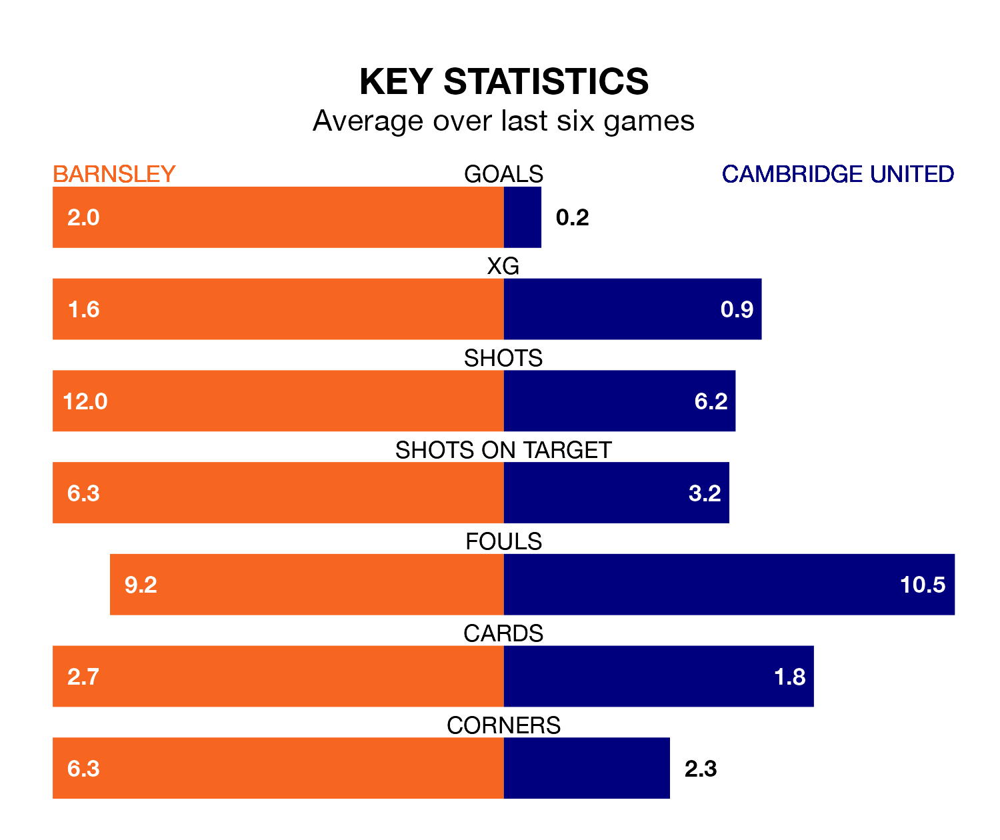

Barnsley are heavy favourites to keep all three points at home in Friday's kick-off against Cambridge United.
The Tykes, who sit fifth in EFL League One with 38 games played, are priced at 1.5 to seal victory at Oakwell.
Sitting 15 places and 32 points behind them in the table, Cambridge are 5.3 to win with *Betting Company*, while the draw is at 4.0.
Barnsley are in reasonable form in EFL League One, with three wins and two draws from their last six games.
With no wins and a draw over that period, Cambridge's form is much worse – they have taken one point from 18, compared to the Tykes's 11.
With 70 goals in 38 games so far this season, the home team are the league's third-highest scorers with 1.8 goals per game. And they are conceding at an average rate, letting in 48 goals at a rate of 1.3 per game.
United, meanwhile, are below average scorers, with 0.8 goals per game, compared to a league average of 1.3. They have conceded 1.4 goals per game.
In Devante Cole, Barnsley have one of the league's sharpest shooters so far this season. He has notched 17 goals in 38 appearances, to sit second in the scoring charts.
His goal rate of one every 180 minutes is quicker than that of Gassan Ahadme Yahyai, the visitors' top scorer with a goal every 201 minutes, and a total of seven goals in 21 games.
In the last three years, Barnsley and Cambridge have played each other on three occasions. Barnsley won all of them.
Their last meeting was on October 3, when Barnsley won 4-0 away.
Barnsley's last match was on March 16, a 0-0 draw against Cheltenham Town.
Cambridge lost 4-0 against Reading last time out, also on March 16.
Updated: 10:19 (UTC), 22/03/24